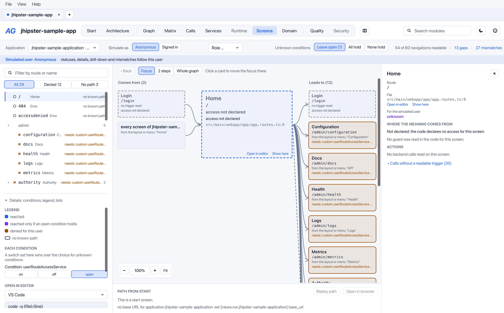
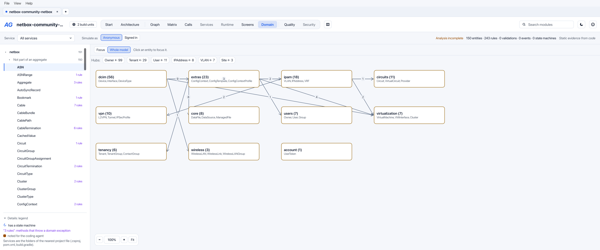
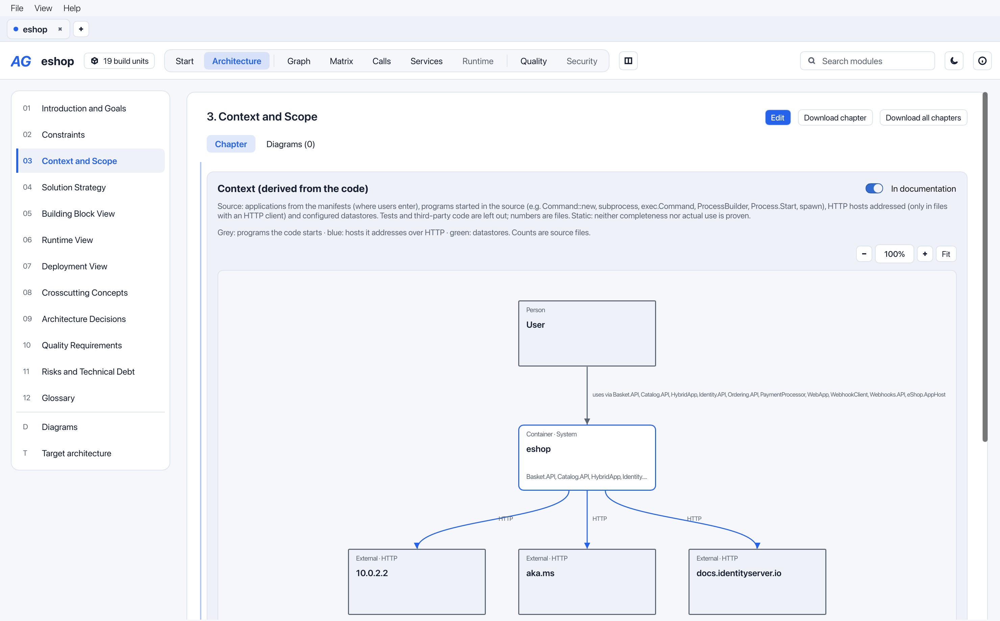

Mit dem Code beginnen.
Öffne ein Projekt ohne Konfigurationsdatei. Erkunde Imports, Dateien und unterstützte Service-Verbindungen.
Evidenzbasierte Architekturanalyse, die sagt, was sie misst und was nicht. Erkunde Abhängigkeiten am Desktop, prüfe Regeln in CI und gib deinem Coding-Agent dieselben Belege.
Projekt erkunden
Fehlende Evidenz ist keine Null. Nicht-kommerzielles Open Source · Lokale Analyse · Keine Telemetrie
Öffne ein Projekt ohne Konfigurationsdatei. Erkunde Imports, Dateien und unterstützte Service-Verbindungen.
Untersuche Quellstellen und Zyklusgruppen. Deklarierte Abhängigkeiten bleiben von beobachteten Laufzeitaufrufen getrennt.
Ergänze Architekturregeln, prüfe sie in CI oder lass deinen Coding-Agent die Analyse über MCP abfragen.
World View, Graph, Matrix, Aufrufe und arc42 zeigen verschiedene Perspektiven desselben Projekts.

Apache Commons Collections: Paketabhängigkeiten und ihre Quellbelege. Zum Vergrößern öffnen.
CBO, RFC, DIT, NOC, WMC, LCOM4, Cognitive Complexity, Halstead und Maintainability hängen vom Sprachadapter ab. Unbekannte Werte bleiben unbekannt. Sprachen und Messgrenzen
UI-Flows, fachliche Modelle und Lastszenarien erweitern ArchGuard über Abhängigkeiten hinaus. Die Dokumentation führt dich von der Oberfläche bis zu Endpunkten, Zustandswechseln und Ereignissen.
Öffne Screens und Domäne im Desktop oder nutze CLI und MCP. Die Anleitungen zeigen Abläufe, Konfiguration und die Bedeutung der Ergebnisse.
Welche Screens gibt es, welche Aktion führt wohin und welcher Backend-Aufruf folgt? Screens, Übergänge und Aktionen behalten ihre Quellstellen; dynamische Ziele bleiben als Lücken sichtbar.
ANLEITUNGScreens und Endpunkte als Zeilen, Rollen als Spalten; Ausgabe als Tabelle, JSON oder CSV sowie über MCP. Screen-Zellen prüfen die eigene Zugriffsbedingung, nicht den gesamten Navigationspfad.
ANLEITUNGAggregate, Entitäten, Value Objects, Felder und Beziehungen anhand definierter Muster lesen. API-Modelle und DTOs gesondert ausweisen, statt sie als fachliche Entitäten zu zählen. Importe ergänzen nicht abgedeckte Muster.
ANLEITUNGAktion → Endpunkt → Use Case → Zustandswechsel → Ereignis → Handler verfolgen. Die Rückwärtssuche fragt, welche Screens, Endpunkte oder Nachrichten einen Zustand wie Paid auslösen können. Rollenprüfungen behalten unbekannte Ergebnisse.
ANLEITUNGOptional prüfen: lesbare Navigationsziele und HTTP-URLs, deklarierte Endpunktrechte, Übereinstimmung von Frontend und Backend, Zustandsänderungen und Event-Erzeugung. Neue Prüfungen finden Ziele ohne passende Route und Endpunkte ohne erkannten UI-Aufruf; externe Clients können letzteres erklären.
ANLEITUNGExplizite Einstiegspunkte, Aufrufraten, Instanzen und Service-Zeiten variieren. Unbekannte Eingaben erzeugen Wertebereiche; mögliche Engpässe nennen ihre Annahmen und Treiber. CLI, MCP und World View zeigen dasselbe Szenariomodell.
Alle Funktionen und Anleitungen ansehen

JHipster: Für den gewählten Home-Screen ist kein Zugriff deklariert. Anonymer Zugriff bleibt unbekannt; lesbare Navigation und Lücken stehen getrennt nebeneinander.

NetBox: Modul-Übersicht mit Entitäten und Beziehungen. Die Analyse ist unvollständig; diese Aufnahme zeigt keine Ereignisse oder Zustandsübergänge.
Teilen sich zwei Services heimlich eine Tabelle?
Lies Deployment-Evidenz aus Compose, Kubernetes und Terraform. Aktiviere Helm- oder Kustomize-Rendering bei Bedarf. Folge Datenbankverbindungen bis zu unterstützten ORM- und SQL-Tabellendeklarationen.
archguard services . --format jsonGemeinsamer Server, gemeinsame Datenbank und gemeinsame Tabelle sind verschiedene Befunde. Unbekannte Tabellennamen bleiben unbekannt; Konfiguration beweist keine Laufzeitnutzung. Kein Cluster-Zugriff, keine Secrets und kein Terraform-State.
Das neue Online-Boutique-Beispiel liest statische Manifeste. Helm und Kustomize bleiben in diesem Lauf bewusst ungerendert. Analysedaten und Grenzen.
Befehle und Grenzen
Online Boutique: statische Konfigurationsbeziehungen mit partieller Analyse. Helm- und Kustomize-Rendering ist deaktiviert. Aufnahme und Quellstand.

Online Boutique: Konfigurationsbelege zum Datastore redis-cart. Das belegt weder gemeinsame Tabellennutzung noch Laufzeitzugriffe. Aufnahme und Quellstand.
Führt dieser Pull Request einen neuen Architekturverstoß ein?
Prüfe Schichtregeln und Grenzwerte mit archguard check. Übernimm bestehende Zyklen bewusst in eine Baseline und prüfe Änderungen samt KPI-Deltas im Pull-Request-Kommentar. Das Repository enthält eine GitHub Action.
archguard check . --baseline
archguard review . --base main --format pr-commentEine Baseline verhindert Rückschritte, bescheinigt aber keine Fehlerfreiheit. Regeln bestimmen das Gate; Evidenzlücken und akzeptierte Befunde bleiben sichtbar.
Echter Check: Exit-Code 1. Spring PetClinic mit einer absichtlich restriktiven lokalen Lehrregel: ein Schichtverstoß. Das ist kein Fehlerbericht über das Upstream-Projekt. Aufgezeichnetes JSON.
Der lokal erzeugte PR-Kommentar zeigt das Ausgabeformat. Die Quelltexte sind unverändert; daraus wird kein echter Code-Rückschritt abgeleitet. Konfiguration, Git-Refs und Grenzen.
Befehle und Grenzen
Spring PetClinic: Graph mit der beispielhaften lokalen Lehrregel. Check-Ergebnis und PR-Kommentar sind separate Aufzeichnungen. Aufnahme und Quellstand.
Welche Quellzeilen erklären diese Abhängigkeit?
Verbinde den lokalen stdio-MCP-Server mit deinem Coding-Agent. Frage gezielt nach Änderungskontext, untersuche einen Zyklus und folge seinen Quellbelegen. Desktop, CLI und Agent nutzen dieselbe Analyse.
archguard mcp --root /path/to/projectLeseabfragen und Simulationen sind von Imports, Baselines und anderen schreibenden Aktionen getrennt. Prüfe vorgeschlagene Änderungen und führe danach die Projekttests aus.
Echte JSON-RPC-Sitzung zu Commons Collections; kein nachgestellter Claude-Code-Dialog. Die Kantenabfrage liefert unter anderem:
edge_evidence
comparators → ComparatorUtils.java
NullComparator.java:23
import org.apache.commons.collections4.ComparatorUtils;
Commons Collections · Quellstellen hinter Aufrufen. Echte Desktop-Aufnahme; Herkunft und Aufnahmezeit siehe Bildnachweise.
Würde das Entfernen dieser Abhängigkeit den Zyklus auflösen?
Simuliere cut-, move- und merge-Operationen am Modulgraphen. Vergleiche Zyklusgruppen, bevor du Quellcode änderst. Nutze echte Knotennamen aus der Analyse oder exportierte Operationen aus dem Viewer.
archguard simulate . --ops operations.json --format jsonEine virtuelle Graphänderung ist noch kein implementiertes Refactoring. Quellkompatibilität, Verhalten und Tests müssen weiter geprüft werden. Der Befehl liest eine aus dem Viewer exportierte Operationsdatei.
Aufgezeichneter Versuch: 3 → 2 Zyklusgruppen. Der virtuelle Schnitt von comparators nach ComparatorUtils löst eine Gruppe auf. Er entfernt nicht alle Zyklen und ändert keine Quelldatei. Simulation mit Parametern und Ergebnis.
Befehle und Grenzen
Vorher: Commons Collections hat drei Zyklusgruppen. Aufnahme und Quellstand.

Nach dem angewendeten virtuellen Schnitt: Zwei Zyklusgruppen bleiben. Quelldateien sind unverändert. Aufnahme und Quellstand.
Passt die Dokumentation noch zu diesem Stand?
Erzeuge alle arc42-Kapitel auf Deutsch oder Englisch, wähle Diagramme und prüfe auf Abweichungen. Exportiere Word für den Confluence-Import, AsciiDoc, ein Structurizr-/C4-Modell oder einen Markdown-Bericht mit Mermaid.
archguard doc . --arc42 --stdout
archguard doc . --arc42 --format docx
archguard graph . --format structurizrGenerierte Evidenz ergänzt menschliche Entscheidungen. Word-Exporte enthalten Diagramme als Mermaid- oder PlantUML-Quelltext, nicht als gerenderte Bilder. Ein C4-Export bildet den unterstützten Quell- und Deployment-Umfang ab.
Befehle und Grenzen
Microsoft eShop · arc42-Kontextabgrenzung. Echte Desktop-Aufnahme; Herkunft und Aufnahmezeit siehe Bildnachweise.
Martin-A/I-Zonen, Propagation Cost, SDP-Verstöße, Tangledness, Health, Layer Drift und Leaky Encapsulation. Jede Metrik mit ihrem Geltungsbereich lesen.
archguard review . --format jsonGit-Churn × Kopplung, Co-Change ohne Imports, CODEOWNERS und ein Entscheidungsregister mit expliziten ADR-Verweisen.
archguard hotspots .
archguard co-change .
archguard ownership .OpenAPI-Import, GraphQL aus Quellen und Breaking-Change-Baselines. OTel-Traces für beobachtete Aufrufe, N+1-Kandidaten und langsame Statements importieren; Sampling-Profile sind separate Evidenz.
archguard contracts .
archguard runtime .Coverage-, SARIF-, JUnit-, Mutations- und CPD-Imports; eingebauter Duplikat-Scanner. Offline-CycloneDX-Inventar und explizite Lizenzregeln; Advisories benötigen Scanner-Evidenz.
archguard sbom . --format cyclonedx
archguard evaluate .ISO-25010-Ziele ordnen Evidenz ein; sie beweisen keine Zielerfüllung. Recall und Precision erfordern eine menschliche Expertenbewertung.

Jellyfin: partieller Abhängigkeits-Scan mit 0 Funden im erfassten Umfang. Das belegt keine vollständige Schwachstellenfreiheit.
Pakete, Zyklen und Quellbelege. Reproduzierbare Anleitung (EN).
Statisch hergeleitete Event-Beziehungen in .NET Aspire. Anleitung (EN).
Architektur auf einer großen Java-Codebasis, mit festgehaltenem Analyseumfang. Anleitung (EN).
Konfigurierte Beziehungen und gRPC-Quellbelege unterscheiden. Anleitung (EN).
TypeScript/JavaScript und C/C++ sind jeweils eine Sprachgruppe. Imports funktionieren ohne zusätzliche Compiler; weitere Analyse benötigt je nach Sprache passende Werkzeuge.
Installiere ArchGuard und öffne dein Projekt. Die Konfiguration kann später dazukommen.
Installation und Einstiegcurl -fsSL https://raw.githubusercontent.com/@@REPOSITORY@@/main/scripts/install/install.sh | sh
cargo install --path crates/archguard-cli --locked
archguard check /pfad/zum/projekt
archguard mcp --root /pfad/zum/projektDesktop unter macOS: ~/Applications/ArchGuard.app öffnen, dann Datei → Projekt öffnen. Linux/Windows: archguard-desktop starten. Alle Installationswege (EN).
Architekturwerkzeuge vergleichen · Artikel und Praxisbeispiele · Dokumentation